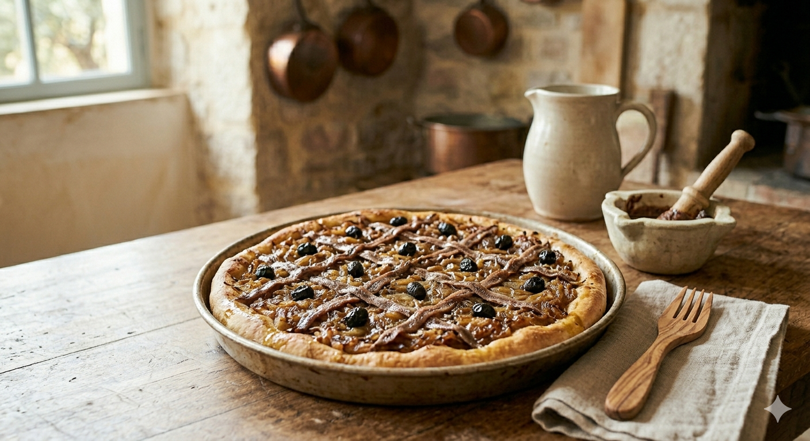

La Pissaladière est l'un des plus vieux fleurons de la cuisine méditerranéenne. Bien plus qu'une simple tarte à l'oignon, elle se distingue par sa pâte à pain moelleuse et son lit de "pissalat" qui lui donne sa force et son authenticité.

Le nom "Pissaladière" vient du niçois pissalat (peis salat, "poisson salé"). C'était autrefois une sauce ancestrale obtenue par la macération de couches d'alevins de sardines et d'anchois dans le sel. Cette préparation très parfumée servait de base à de nombreux plats avant de devenir l'ingrédient phare de notre célèbre tarte.
1. La Pâte : Dans un grand récipient, mélangez la farine et le sel. Diluez la levure dans l'eau tiède avec l'huile d'olive, puis versez sur la farine. Pétrissez vigoureusement pendant 10 minutes. Couvrez d'un linge et laissez lever 1h30 dans un endroit chaud.
2. La Compotée : Émincez les oignons finement. Faites-les fondre à feu très doux dans une sauteuse avec de l'huile d'olive et du thym pendant au moins 45 minutes. Ils doivent être translucides et sucrés.
3. La Pommade : Au mortier ou au mixeur, réduisez en purée lisse les sardines et la moitié des anchois. Ajoutez un peu d'huile pour détendre la préparation.
4. Le Montage : Étalez la pâte sur une plaque huilée. Tartinez généreusement la pommade sur toute la surface, puis recouvrez avec la montagne d'oignons fondants.
5. Le Décor et la Cuisson : Disposez les filets d'anchois restants en formant des croisillons (losanges) sur les oignons. Placez une olive noire au centre de chaque losange. Enfournez à 200°C pendant 20 à 25 minutes jusqu'à ce que les bords soient bien dorés.